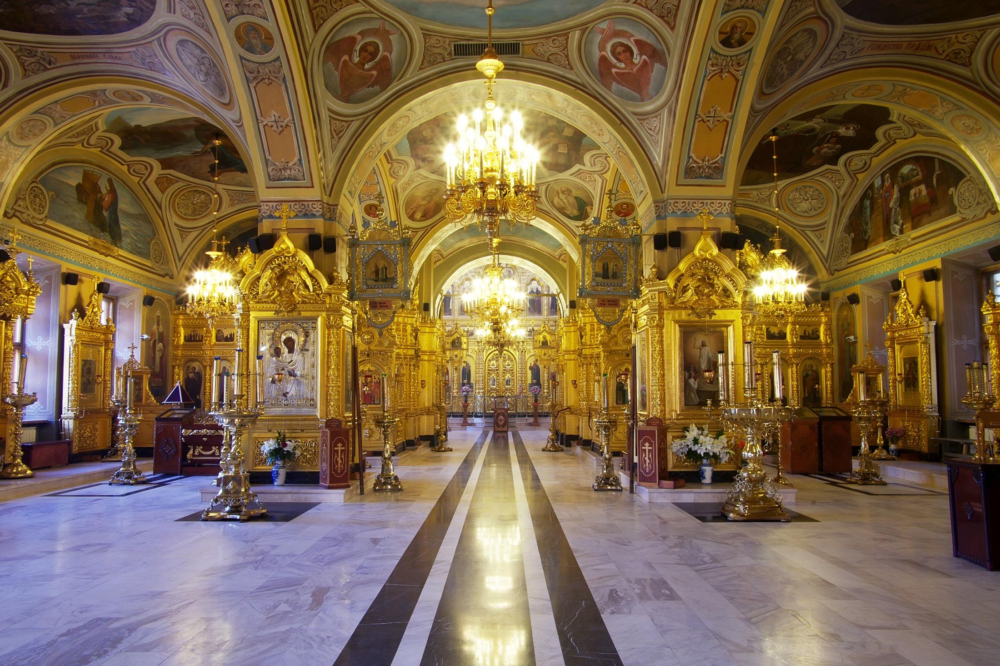

Список Достопримечательностей
1. Памятник Подольским курсантам
Молодые бойцы Красной армии держали оборону на Варшавском
шоссе в районе Юхнова, Медыни, Ильинского, Малоярославца и Детчино в ходе битвы за Москву
начального периода Великой Отечественной войны.
Вместе с частями 43-й армии они сдержали натиск немецко-фашистских войск и помогли выиграть
время для подтягивания резервов РККА к Москве.
В результате направление на Москву через Подольск по Варшавскому шоссе было закрыто для
противника.
Подробнее

2. Фонтан "Первый бал Наташи Ростовой"
Фонтан "Первый бал Наташи Ростовой" - это композиция,
посвященная героям романа «Война и мир». По центру фонтана находится скульптура, которая
изображает как Наташа Ростова кружится в танце с Андреем Болконским. Как всем известно, автор
произведения «Война и мир» - Лев Николаевич Толстой. Памятник главным героям находится на
бульваре Льва Толстого, названном в честь великого писателя. Скульптурная группа и фонтан
"Первый бал Наташи Ростовой" были открыты 5 октября 2014 года.
Подробнее
3. Краеведческий музей
Краеведческий музей — музей, объектом деятельности которого
является документация и презентация исторического, природного и культурного развития
определённого населённого пункта или географического региона. Основными фондами такого музея
являются связанные с историей этого региона экспонаты, в числе которых могут быть, например,
археологические находки; произведения искусства или ремесла; документы и изобразительные
материалы, фиксирующие исторические события, происходившие в этой местности; предметы быта;
мемориальные предметы, связанные со знаменитыми земляками; материалы, отражающие экономическое и
техническое развитие края, и т. д.
Подробнее
4. Площадь Славы
В 1971 году архитектурно-скульптурный ансамбль на площади
50-летия Октября, посвященный Великой Отечественной войне, представлял собой большую гранитную
плиту с высеченными фигурами советских солдат, рвущихся в бой с гранатами и автоматами, а также
словами: «Героям-подольчанам, жизнью своей защитившим Родину, честь и свободу», и зажжен вечный
огонь. Авторы памятника Ю. Любимов и Л. Земсков.
В начале 2000-х годов, было принято решение реконструировать площадь, дополнив скульптурную
композицию памятными объектами, посвященными труженикам тыла.
Подробнее
5. Музей-заповедник «Подолье»
Музей-заповедник «Подолье» расположился вдоль реки Пахры на
территории парка в историческом центре города. Главным зданием является дом-музей Владимира
Ленина, открытый в 1937 году в честь пребывания здесь семьи революционера. Также экспозиции для
просмотра доступны в домах Морозовых, Кедровой, Артемьевой, Белоджаева. Внутри помещений —
восстановленный интерьер конца XIX века, читальные залы и собрания редких предметов. Общая
территория заповедника занимает площадь, равную 19 футбольным полям.
Подробнее
6. Сквер Поколений
Сквер Поколений - это подарок жителям города к 225-летию
Подольска. Дата создания - 2006 год. Территория сквера была благоустроена, появились скамейки,
фонари, декоративная подсветка. В центре сквера были установлены большие городские часы.
Подробнее

7. Троицкий собор
Собор был построен в 1819—1832 годах в честь победы в
Отечественной войне 1812 года по проекту мастера школы О. И. Бове, знаменитого реконструкцией
Москвы после пожара 1812 года. Торговые ряды, в ансамбль которых входил собор, при советской
власти уничтожены.
В 1880-е годы храм был утеплён, сооружён новый иконостас с драгоценными серебряными ризами. В
1898 году была обновлена и трапезная, вновь сооружены иконостасы и приобретена церковная утварь.
В годы советской власти Троицкий собор был единственным действующим городским собором Московской
области .
С 1920 года храм стал одним из кафедральных соборов Московской епархии (таковым он является
ввиду наличия титулярных (то есть не имеющих административной власти над данным городом)
викариев с титулом «Подольский»). Первым епископом Подольским был Петр (Полянский) будущий
Патриарший Местоблюститель, священномученик.
Настоятелем собора с начала 1940-х годов до кончины 7 января 1954 года служил архимандрит
Гавриил (Григорьев), постриженик Тихоновой пустыни.
Подробнее

8. Усадьба Ивановское
Усадьба, принадлежавшая в XVIII веке Головиным, была
отстроена в камне в самом начале XIX века сенатором и библиофилом, графом Фёдором Толстым
(1758—1849). Разбогатев за счёт брака с внучкой горнозаводчика Мясникова, он собрал одну из
самых полных в России того времени коллекций редких книг и рукописей. Его родной брат Илья — дед
Льва Толстого.
Большой господский дом классической архитектуры (6-колонный, первоначально 2-этажный) обращён
фасадом к берегу Пахры, укреплённому каменной террасой. В центре среднего этажа, который
считался парадным, помещался большой лепной зал в два света, где проходили балы и приёмы, с
камином в стиле Людовика XVI. К дому примыкали два флигеля, в которые можно было попасть по
низким каменным переходам. «Рассчитанный на отражение в реке, на чудесную раму зелени, дом в
Ивановском со стороны сада казался очень стильным и выдержанным».
Подробнее
9. Подольский выставочный зал
В центре г. Подольска на площади Ленина расположен один из
лучших выставочных залов в Московской области — Подольский выставочный зал. Общая площадь
составляет 2 000 м, экспозиционная — 1 100 м. Причем экспозиционная может быть усилена
мобильными стендами, они выполняют роль разделения темы или, наоборот, ее обобщения.
Выставочный зал был открыт в 1977 году. За это время в современной выставочной деятельности зала
прошел целый ряд масштабных выставочных проектов при участии Российской академии художеств, а
также крупнейших музеев России: Государственного исторического музея (1990–2000),
Государственного музея революции СССР (1988–1990), музея-усадьбы «Кусково» (1987–1994),
Серпуховского историко-художественного музея (1988–1994), Всесоюзного музея
декоративно-прикладного и народного искусства (2003–2006), студии военных художников им. М.
Грекова, Музея минералогии им. Ферсмана (2003–2007), Центрального архива МО РФ и т. д.
Подробнее
10. Знаменская церковь
Храм Зна́мения Пресвятой Богоро́дицы в Дубровицах —
приходской храм Подольской епархии Русской православной церкви. Главный престол храма освящён в
честь иконы Божией Матери «Знамение».
Расположен в посёлке Дубровицы городского округа Подольск Московской области, примерно в 36 км
от центра Москвы (16 км от МКАД), на окраине Подольска. Центральная часть архитектурного
ансамбля усадьбы Дубровицы, некогда принадлежавшей представителям дворянских семей Морозовых,
Голицыных и Дмитриевых-Мамоновых.
Знаменская церковь отличается от других русских храмов рубежа XVII—XVIII веков устремлённой
ввысь центрической композицией, 12-лепестковым планом и центральным столбом, увенчанным ажурной
золочёной короной.
Подробнее
11. Скульптура «Подольск — город рабочего класса»
Памятник рабочему классу в Подольске первым встречает всех
гостей города - он расположен на вокзальной площади. В глаза сразу бросаются черты тоталитарного
искусства, его мощь и величественность.
Скульптура «Подольск город рабочего класса" была открыта в 1969 году, ее авторы Ю.Любимов,
Л.Земсков и Л.Скроб. Их задачей было передать обобщенную трудовую славу подольчан разных
поколений, рассказать о подвигах героев труда первых и послевоенных пятилеток. Памятник отражает
периоды становления машиностроения, энергетики, освоения космоса, и за всем этим стоит простой
рабочий человек, готовый развиваться и двигаться вперед. Несомненно, памятник выполнен в лучших
традициях своего времени.
Подробнее
12. Храм Воскресения Христова
Деревянная Воскресенская церковь впервые упоминается в тексте
жалованной грамоты царя Иоанна IV Свято-Данилову монастырю: «..погостом на реке на Пахре, а в
нем церковь Воскресение Христово…». Существует гипотеза, что первоначально храм находился на
противоположном, т. е. левом, берегу Пахры. Данное предположение основано на сравнительном
историко-картографическом анализе, проведенном Э. Ф. Сун.
С начала XVII столетия в Добрятинском стане известно село Подол, «Пехра тож», в котором была
деревянная церковь с небольшой колокольней: «…а в селе церковь Воскресения Христова древяна
клетцки. В церкви образы, и книги, и свечи, и на колокольнице колокола, и всякое церковное
строение монастырское и приходных людей. У церкви во дворе поп Афанасий Петров да с ним
церковный дьячок Петрушка Игнатьев, во дворе пономарь Акинфейко Игнатьев, келья просвирницы…».
Подробнее